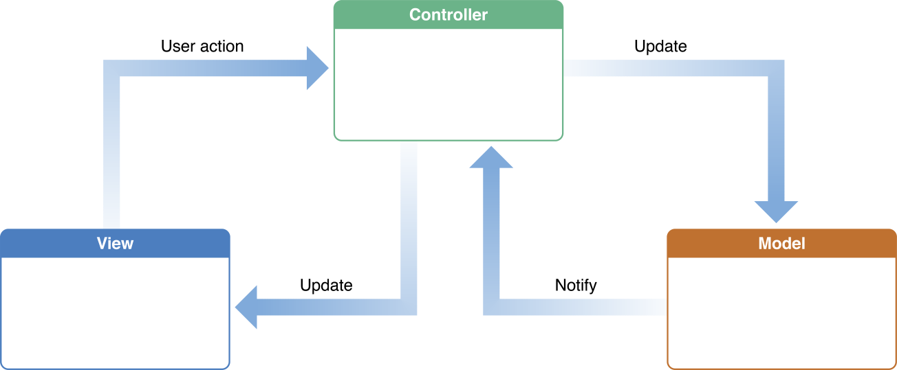

Ruby on Rails
Instructor: Sean C Davis
Agenda
- Session 1: Introduction
- Session 2: Something Else
- Session 3: Introduction
- Session 4: Introduction
Session 1: Introduction
A Good Developer
There's No Secret
Push Through Failure
Be Elated By Success
Work Hard
Google!
Stay Organized
Be Curious
Ruby
Ruby Is
- Productive
- Fun
- Not Surprising
Examples:
# variables
my_var = 1 # => 1
# operations
my_var + 1 # => 2
# arrays
my_array = [1, 2, 'a', 'b', my_var] # => [1, 2, 'a', 'b', 1]
# methods
def add(a, b)
a + b
end
add(2, 3) # => 5
Object-Oriented Programming:
- Everything is an object
- Objects have attributes
- Objects have methods
class Book
attr_accessor :title
def reverse_title
title.reverse
end
end
book = Book.new # => #<Book:0x007fbcf48c8120>
book.title = 'American Gods'
book.title # => 'American Gods'
book.title = 'The Martian'
book.title # => 'The Martian'
book.reverse_title # => 'naitraM ehT'
Ruby on Rails
Rails is:
- Server-Side Web Application Framework
- Productive
- Fun!
Rails Principles:
- Don't Repeat Yourself (DRY)
- Convention Over Configuration (The Rails Way)
Rails' History
- Released in 2005
- Extracted from Basecamp
- Used by 1.2M: Basecamp, AirBNB, GitHub, Dribble
What About HTML/CSS?
- HTML and CSS still play a big role
- Dynamic data (database)
- Scalability and Flexibility
Let's Get To Work
Demo
We're going to build a classroom grading system!
TODO: Slides on Cloud9 setup
TODO: Slides on Cloud9 setup
A Simple HTML Site
A Rails App

Uh, WTF?
Good news!
We will spend most of our time within the app folder
(directory).
Still, Let's Peek
app:Holds the files you'll create to build the appbin:A place Rails keeps its command-line scriptsconfig:A handful of configuration filesdb:Files related to the databaselib:General class files and rake taskslog:A place to hold log filespublic:The technical root of your projecttest:Where all the test files gotmp:Houses temporary files that are regularly deletedvendor:Third-party assets
The App Directory

Model-View-Controller (MVC)
Model-View-Controller (MVC)
- Model: The scientist
- Controller: The conductor
- View: The mailman
The App Directory
assets:Images, videos, fonts, stylesheets, javascripts, etc.channels:For websockets (we won't use)controllers:Files that control app logichelpers:Shared code for view filesjobs:Background processes (we won't use)mailers:Controllers for emailsmodels:Data models (controls for the database)views:HTML view files
Let's Write Some Code
Models
Data objects used by the application.
What will our app require?
- Student
- Teacher
- Classroom
- Assignment
- Score
Attributes
An attribute is a piece of information about a model.
Attributes are database columns.
What attributes should our students have?
- Name (String)
- Age (Integer)
Rails Generators
Rails comes with a set of generators that remove the need of performing some boring and repeatable tasks.
We can see the tasks available to us by running:
$ rails generate
Rails:
assets
channel
controller
generator
helper
integration_test
jbuilder
job
mailer
migration
model
resource
scaffold
scaffold_controller
system_test
task
Student Scaffold
We're going to use a Rails scaffold to add all the files we need for students (along with some extras we won't use):
$ rails generate scaffold student name:string age:integer
Notice the output:
invoke active_record
create db/migrate/20170601105024_create_students.rb
create app/models/student.rb
invoke test_unit
create test/models/student_test.rb
create test/fixtures/students.yml
invoke resource_route
route resources :students
invoke scaffold_controller
create app/controllers/students_controller.rb
invoke erb
create app/views/students
create app/views/students/index.html.erb
create app/views/students/edit.html.erb
create app/views/students/show.html.erb
create app/views/students/new.html.erb
create app/views/students/_form.html.erb
invoke test_unit
create test/controllers/students_controller_test.rb
invoke helper
create app/helpers/students_helper.rb
invoke test_unit
invoke jbuilder
create app/views/students/index.json.jbuilder
create app/views/students/show.json.jbuilder
create app/views/students/_student.json.jbuilder
invoke test_unit
create test/system/students_test.rb
invoke assets
invoke coffee
create app/assets/javascripts/students.coffee
invoke scss
create app/assets/stylesheets/students.scss
invoke scss
create app/assets/stylesheets/scaffolds.scss
Student Scaffold
Let's step through the files we're going to use and see what they each do.
Data Migration
Data migrations run a task within the database (so you don't have to write ugly SQL code).
This:
create_table :students do |t|
t.string :name
t.integer :age
t.timestamps
end
Is the equivalent of this, in SQL code:
CREATE TABLE "students" ("id" INTEGER PRIMARY KEY AUTOINCREMENT NOT NULL, "name" varchar, "age" integer, "created_at" datetime NOT NULL, "updated_at" datetime NOT NULL);
Data Migration
Now let's make the database run the code.
Create the database:
$ rails db:create
Run the migration:
$ rails db:migrate
Data Migration
A new file was created for you: db/schema.rb.
It stores a snapshot of your database's structure.
It also looks like migration (ruby) code:
ActiveRecord::Schema.define(version: 20170601102352) do
create_table "students", force: :cascade do |t|
t.string "name"
t.integer "age"
t.datetime "created_at", null: false
t.datetime "updated_at", null: false
end
end
Student Model
The generator also gave you a student model in
app/models/student.rb:
class Student < ApplicationRecord
end
This means your app now has a Student class which
inherits from an ApplicationRecord class.
Rails Server
Before we go any further, let's start the rails server and see what happens.
$ rails server
Rails Server
At this point, all we have is a static page.
Where the heck did it come from?

This is the default Rails home page because we aren't telling Rails what to do with our home page.
Routes
Routes in Rails are URL paths/fragments that tell Rails which
controller is responsible based on the current URL.
(Don't worry, this will make more sense soon!)
Check out config/routes.rb:
Rails.application.routes.draw do
resources :students
end
What the heck does this mean?
Routes
We can run another task to have Rails show us what our routes really are.
$ rails routes
And the output:
Prefix Verb URI Pattern Controller#Action
students GET /students(.:format) students#index
POST /students(.:format) students#create
new_student GET /students/new(.:format) students#new
edit_student GET /students/:id/edit(.:format) students#edit
student GET /students/:id(.:format) students#show
PATCH /students/:id(.:format) students#update
PUT /students/:id(.:format) students#update
DELETE /students/:id(.:format) students#destroy
There's a lot going on here, and we will cover it all, but for now
notice that we have no home (root) path, which would be
/.
Routes
So, add the root path in config/routes.rb.
Rails.application.routes.draw do
resources :students
root to: 'students#index'
end
This means the root of our application points to the
index action of the students controller.
(It's also important to know that the root path goes on the
bottom of the routes file.)
Routes
Let's look at our routes again
$ rails routes
Notice the new line at the bottom:
root GET / students#index
Awesome! Now reload the home page and see what we've got.
Rails Server
Awesome! Now reload the home page and see what we've got.
It Works!
Rails Server
OK, cool, but why does it work?
Page Loading Process
-
When you navigate to a page in the app, Rails first looks at
your
config/routes.rbfile. -
Since you went to the home page, Rails matched that route and
sent it to the
indexaction of thestudentscontroller. -
The
indexmethod did some stuff, and then Rails knew to render the student'sindexview.
Cool, so let's dig into #2 and #3.
Student Controller
The file in app/controllers/students_controller.rb
is your students controller.
It's a long file, but look at the index method
specifically. (Methods are called actions when they lead to a route
being rendered.)
def index
@students = Student.all
end
In ruby, @ means the variable is an instance variable.
For us that means it is also available to the view.
Student is our student model (remember it's a class),
and .all means we're callng the all
method on the student class.
all is an ActiveRecord query that returns all students
found in the database.
Student Index View
The file in app/views/students/index.html.erb
is the index view for students.
It's mostly HTML, isn't it?
<table>
<thead>
<tr>
<th>Name</th>
<th>Age</th>
<th colspan="3"></th>
</tr>
</thead>
<tbody>
<% @students.each do |student| %>
<tr>
<td><%= student.name %></td>
<td><%= student.age %></td>
<td><%= link_to 'Show', student %></td>
<td><%= link_to 'Edit', edit_student_path(student) %></td>
<td><%= link_to 'Destroy', student, method: :delete, data: { confirm: 'Are you sure?' } %></td>
</tr>
<% end %>
</tbody>
</table>
Student Index View
The <% %> symbols are called embedded ruby.
When this view is rendered, the embedded ruby code is transformed to HTML code, and then the entire HTML file is sent to the browser.
That's why the view may look like this when it's presented:
Name
Age
Nick Cage
53
Show
Edit
Destroy
Emma Watson
27
Show
Edit
Destroy
Student Index View
Some additional notes on ruby embedded in this file:
-
@studentsis the variable the view received from the controller calling@student = Student.all -
eachis a method available on arrays in ruby (@studentsisn't really an array, but let's ignore that for now) that enables us to loop through each student. -
So
@students.each do |student|loops through each student, setting each to a temporarystudentvariable. -
We can call
nameandageonstudentbecause we added those as attributes. -
link_tois a rails helper for resolving anchor tags. -
Rails also has route helpers. It knows that
edit_student_path(student)should be the edit path for that student. (Runrails routesagain.) - Adding an equals sign at the beginning of an embedded ruby section will output the result in text to the page.
Student Index View
Try some experimentation and see what happens. After each, refresh the browser on the home page.
- Change the page heading
- Change a column heading
-
Change
'Destroy'to'Delete' -
Change
person.nametoperson.title -
Add
=to the beginning of the students loop.
Creating A Student
Next, let's break down the process of how a student is created.
-
When you click "New Student" you follow the
new_student_path. -
Notice the URL (
/students/new). -
The route points to the
newaction. -
newsets the@studentvariable toStudent.new. -
Calling
.newon a class returns a new instance of that class (which is just another object). So, you have a student, but the student doesn't have a name, age, or id yet.
Creating A Student
Take a look at the view in
app/views/students/new.html.erb.
New Student
<%= render 'form', student: @student %>
<%= link_to 'Back', students_path %>
Ummmm ... the form is magically rendered?
Actually, no. Within a view, render looks for a
partial, which is a view with the name you pass as an
argument.
Creating A Student
Go find a _form.html.erb file within the same directory
as the new view.
<%= form_with(model: student, local: true) do |form| %>
<% if student.errors.any? %>
<%= pluralize(student.errors.count, "error") %> prohibited this student from being saved:
<% student.errors.full_messages.each do |message| %>
- <%= message %>
<% end %>
<% end %>
<%= form.label :name %>
<%= form.text_field :name, id: :student_name %>
<%= form.label :age %>
<%= form.number_field :age, id: :student_age %>
<%= form.submit %>
<% end %>
There, that looks better!
Creating A Student
Let's talk about the form:
-
form_withis a form-building helper. (Notice the equals sign before it. Forms need to be rendered to the page.) -
Because we have
model: studentas an argument toform_with,form.text_field :namewill add a field for a student's name. -
form.submitadds a button that submits the form.
Creating A Student
Because we have form_with(model: student), Rails knows
where to submit the form. (This gets more complicated when our
routes file becomes more complex, but that's OK for now.)
This means clicking the button sends the data within the form to
the create action on the students controller.
Creating A Student
In the create action, the student get initialized
like in new, except this time, it adds student_params
as an argument.
@student = Student.new(student_params)
student_params is a private method at the bottom of
the controller. (In this case, private just means it's
not a controller action.)
params.require(:student).permit(:name, :age)
This uses a Rails way of pulling the data from the request via
params and tells us which parameters are allowed.
(We'll come back to this later.)
Creating A Student
The rest of the create action has a lot going on,
but this is really all it's doing for our case:
if @student.save
redirect_to @student, notice: 'Student was successfully created.'
else
render :new
end
In other words, if the student can be saved, then we
redirect to the student (i.e. the show action for that
new student).
If the student can not be saved, then we
render the new view. (This is a way to render a view
without redirecting. And we'll explore that next.)
Validations
Did you notice you can create a student with no data? Doesn't that seem silly?
Why don't we make sure that we at least need a name to be able to create a student.
Add the following to your student model:
validates_presence_of :name
This means the student model is going to require that name be present or it won't let the student be saved.
Validations
Try to create the student again, and notice the errors.
Validations
Look back at the controller. In this case, the create
action could not save the student, so it rendered the
new view again without reloading the page.
We don't want the page reloaded because we still have the student object we tried to create, which helps that student's attributes persist.
I know, it's weird. But check it out. Try to create a new student with only an age. Notice how the age is still there? Isn't that the third coolest thing ever?
Editing A Student
Editing a student works in almost the exact same way as creating a student.
The difference is that we need to retrieve the student from the database first so we know which object we're going to update.
Editing A Student
Look at the edit action:
def edit
end
OK, so it's empty. But what about the view?
Editing Student
<%= render 'form', student: @student %>
<%= link_to 'Show', @student %> |
<%= link_to 'Back', students_path %>
It's rendering the form while passing the @student
variable to it. But ... where did that variable get set?
Editing A Student
Look at the top of the controller:
before_action :set_student, only: [:show, :edit, :update, :destroy]
This tells the controller to run the set_student
method before the action is processed, but only for the show, edit
update, and destroy actions.
Find set_student. It's a private method.
def set_student
@student = Student.find(params[:id])
end
Notice how it sets the @student variable.
This is a great way to be DRY and share code among actions.
Editing A Student
@student = Student.find(params[:id])
In this case, find is also making a call to the
database. It requires that an id be passed to it.
(We will explore this idea more a bit later.)
params is a hash of parameters available
to the controller.
Editing A Student
Look at your current URL: Something like
/students/1/edit. Remember rails routes
for the edit action?
edit_student GET /students/:id/edit(.:format) students#edit
In this case, :id represents a varying parameter.
In our case, 1 is available through
params[:id]
That means this:
@student = Student.find(params[:id])
Resolves to this:
@student = Student.find(1)
So we are returned the student with an id of
1.
Editing A Student
The other big difference between creating and updating is that your
update action calls
@student.update(student_params) instead of
Student.new(student_params).
.update is another method used to update an object
that already exists in the database.
Deleting A Student
By now, hopefully this process is familiar. When we hit the
destroy action, we:
- retrieve the student
-
call
@student.destroy(which deletes the record from the database) - redirect to the
indexaction
Celebrate!
You just learned the basics of a Rails app!
Challenge!
Next, we want to be able to add teachers.
So, create a teacher model with the appropriate controller and views.
The teacher should be required to have a name, and should also have a hired date.
Challenge: Solution!
Run the scaffold generator
$ rails generate scaffold teacher name:string hired_at:date
Run the migration.
$ rails db:migrate
Add the validation to the model.
validates_presence_of :name
Teachers
Question: How do we get to the teachers views in the browser?
One option: Go to /teachers directly.
Better option: Build a header with links to students and teachers.
Shared Header
Have you noticed something missing?
The only HTML we've talked about are little snippets. What about the rest of the HTML. Where does it come from?
Answer: app/views/layouts/application.html.erb
There it is! How do our views get plugged into this?
Answer: They are rendered where you see <%= yield %>.
Try it. Add some HTML to the body of the layout and see if it shows up in the browser!
Shared Header
So, right inside the layout, we can add a header:
<body>
<%= link_to 'GreatGraders', root_path %>
-
<%= link_to 'Students', students_path %>
-
<%= link_to 'Teachers', teachers_path %>
<%= yield %>
</body>
It works, but it's pretty ugly. So why don't we move it into its own partial?
Shared Header
Let's take the code we added and move it to a partial at
app/views/application/_header.html.erb
In the layout, we simply need to make sure we render that partial.
<body>
<%= render 'header' %>
<%= yield %>
</body>
Grouping Students and Teachers
Now we need to find a way to group students and teachers together, so we can track the students each teacher is responsible for.
Let's create a Classroom model that is associated to students and teachers.
$ rails generate scaffold classroom room_number:integer
Grouping Students and Teachers
Don't forget to add a validation so we can't create blank classrooms.
class Classroom < ApplicationRecord
validates_presence_of :room_number
end
Grouping Students and Teachers
Now we want to make sure we can navigate to classrooms from the header
<%= link_to 'Classrooms', classrooms_path %>
Grouping Students and Teachers
But how do we connect teachers and students to a classroom?
That's where associations come in.
We want a new column on teacher and students to assign them to a classroom.
This is called a one-to-many relationship, because one classroom has many teachers/students.
Grouping Students and Teachers
To change an existing table we use a custom migration.
$ rails generate migration add_classroom_id_to_students_and_teachers
The name we chose for the migration is abitrary, but is meant to be semantic and representative of the desired action.
Notice the output:
invoke active_record
create db/migrate/20170604130906_add_classroom_id_to_students_and_teachers.rb
Grouping Students and Teachers
Go find that file and customize it with your new columns:
class AddClassroomIdToStudentsAndTeachers < ActiveRecord::Migration[5.1]
def change
add_column :students, :classroom_id, :integer
add_column :teachers, :classroom_id, :integer
end
end
This tells rails to add a classroom_id column to the
students table and the teachers table.
Grouping Students and Teachers
Now we can migrate.
$ rails db:migrate
But rails still doesn't know it has an association. You have to inform rails that you want the models associated.
Grouping Students and Teachers
For the student and teacher model, you want to say they each belong to a classroom.
The resulting student model:
class Student < ApplicationRecord
belongs_to :classroom
validates_presence_of :name
end
Do the same thing for teachers.
Grouping Students and Teachers
Classrooms have many students and teachers. Its model looks like this:
class Classroom < ApplicationRecord
has_many :students
has_many :teachers
validates_presence_of :room_number
end
Grouping Students and Teachers
Now we need to be able to assign a student and teacher to a classroom.
First, we want to add the classroom_id to the student
form.
<%= form.label :classroom_id %>
<%= select student, :classroom_id, @classrooms %>
That causes an error! Why?
Because we didn't set @classrooms to anything.
Grouping Students and Teachers
Make it available in the students controller
before_action :set_classrooms, only: [:new, :create, :edit, :update]
# ...
private
def set_classrooms
@classrooms = Classroom.all
end
Grouping Students and Teachers
That works but it's super ugly, isn't it?
How do we know which classroom is which?
Rails uses the to_s instance method to resolve the
value for this select.
Unfortunately, adjusting this will lead to another issue, so let's try this instead:
def set_classrooms
@classrooms = Classroom.all.collect { |c| [c.room_number, c.id] }
end
Refresh the student form and it should look good and work fine.
Grouping Students and Teachers
Now, do the same thing, but to teachers.
Grouping Students and Teachers
It's great once it works, but we aren't sure which classroom teachers and students are in without going into the form view.
So, let's add that visibility to the index views.
<table>
<thead>
<tr>
<th>Name</th>
<th>Age</th>
<th>Classroom</th>
<th colspan="3"></th>
</tr>
</thead>
<tbody>
<% @students.each do |student| %>
<tr>
<td><%= student.name %></td>
<td><%= student.age %></td>
<td><%= student.classroom_id %></td>
<td><%= link_to 'Show', student %></td>
<td><%= link_to 'Edit', edit_student_path(student) %></td>
<td><%= link_to 'Delete', student, method: :delete, data: { confirm: 'Are you sure?' } %></td>
</tr>
<% end %>
</tbody>
</table>
Grouping Students and Teachers
That works, but wouldn't we rather have the room number?
<%= student.classroom.room_number %>
WARNING! This causes what we call an N+1 problem. Solving it is outside the scope of this course.
Grouping Students and Teachers
Do the same thing for teachers.
Grouping Students and Teachers
On a classroom show view, say we wanted to list the students and teachers, how would we do that?
Maybe something like this?
<h2>Teachers</h2>
<ul>
<% @classroom.teachers.each do |teacher| %>
<li><%= teacher.name %></li>
<% end %>
</ul>
<h2>Students</h2>
<ul>
<% @classroom.students.each do |student| %>
<li><%= student.name %></li>
<% end %>
</ul>
Pause for Ruby Magic
This is outside the scope, but check this out. You can write the same code from the previous slide like this:
<% [Student, Teacher].each do |model| %>
<h2><%= model.to_s.pluralize.titleize %></h2>
<ul>
<% @classroom.send(model.table_name).each do |obj| %>
<li><%= obj.name %></li>
<% end %>
</ul>
<% end %>
Deploying To Heroku!
Deploying To Heroku!
First things, first, sign up for a Heroku account (https://heroku.com).
Create a new app and give it a unique name.
Deploying To Heroku!
Login to Heroku on the command line
$ heroku login
And let's add git and register our project. (Git is the coolest tool ever, and GDI offers a course on it.)
$ git init
$ heroku git:remote -a gdi-test-classroom-manager
Deploying To Heroku!
Next, we have to add a git commit to be able to deploy.
You'll have to do this every time you make a new change you want to deploy.
$ git add .
$ git commit -am "make it better"
Now, deploy!
$ git push heroku master
Deploying To Heroku!
Oh no! It broke because we don't have our database configured correctly for heroku.
Heroku uses PostgreSQL for its database, so we need to set that up for production.
First, in our Gemfile, adjust the sqlite3 gem:
group :development, :test do
gem 'sqlite3'
end
group :production do
gem 'pg'
end
Then in the database configuration change the production section.
production:
adapter: postgresql
database: my_database_production
pool: 5
timeout: 5000
Deploying To Heroku!
Commit the change
$ git add .
$ git commit -m "postgres"
And deploy again:
$ git push heroku master
Deploying To Heroku!
Oh farts! The dreaded Rails production error:
Deploying To Heroku!
You can inspect the logs from Heroku.
$ heroku logs
Notice the error message:
ActionView::Template::Error (PG::UndefinedTable: ERROR: relation "students" does not exist
Maybe we forgot to migrate?
Deploying To Heroku!
Run the migration command on Heroku
$ heroku run rails db:migrate
Check the app now and it should be working properly!
The Asset Pipeline
Your app has two files that consolidate all styles:
app/assets/stylesheets/application.css and
app/assets/javascripts/application.js
The Rails asset pipeline is super powerful
Some Closing Thoughts
- Gems are super useful. Checkout popular ones like Devise, SimpleForm, Paperclip, Kaminari.
- Testing is invaluable and should become part of your practice once you're comfortable within the framework.